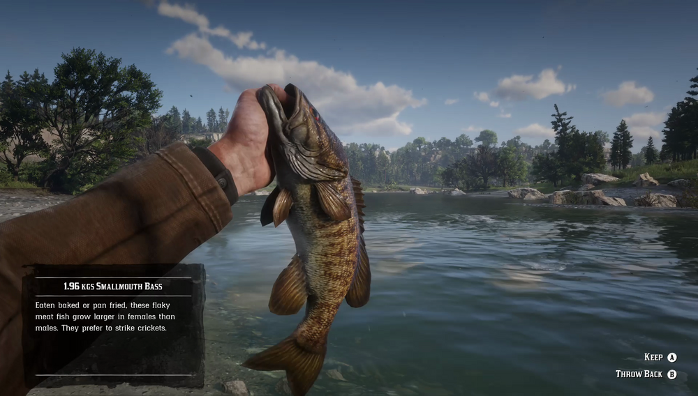

Smallmouth Bass are commonly seen in the northern rivers. They prefer natural baits, such as crickets, over lures. Larger and tougher than Rock Bass, Smallmouth Bass can put up quite a fight once hooked. They seem to be most active during rain. A Legendary Smallmouth Bass is said to live in western Big Valley.
Can be found in Kamassa River, Lagras, Flat Iron Lake eastern islands, Dakota River near Caliban's Seat, Upper Montana River and Lake Don Julio.
